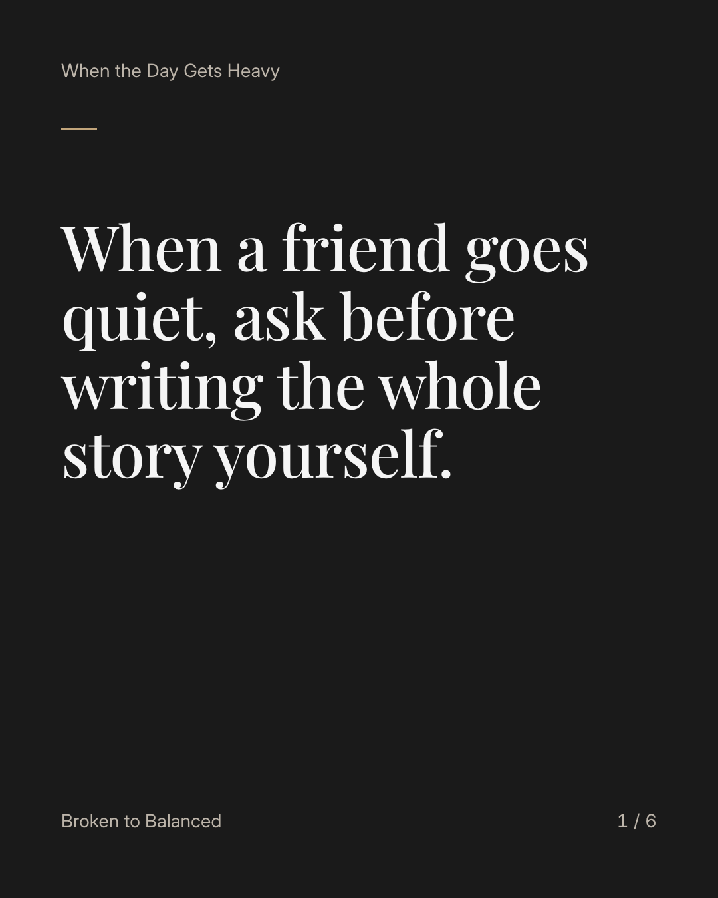
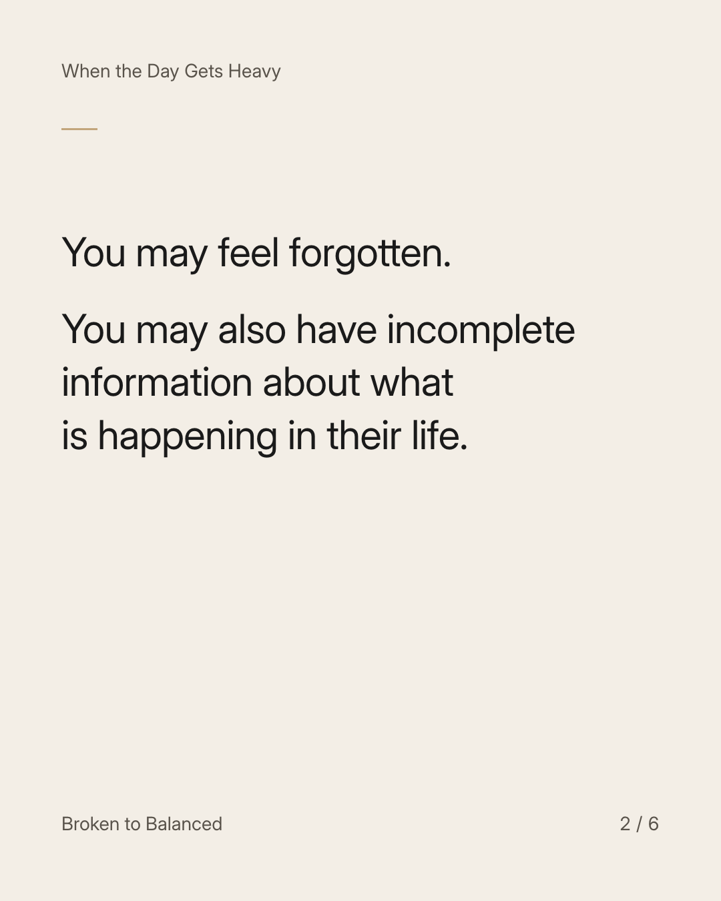
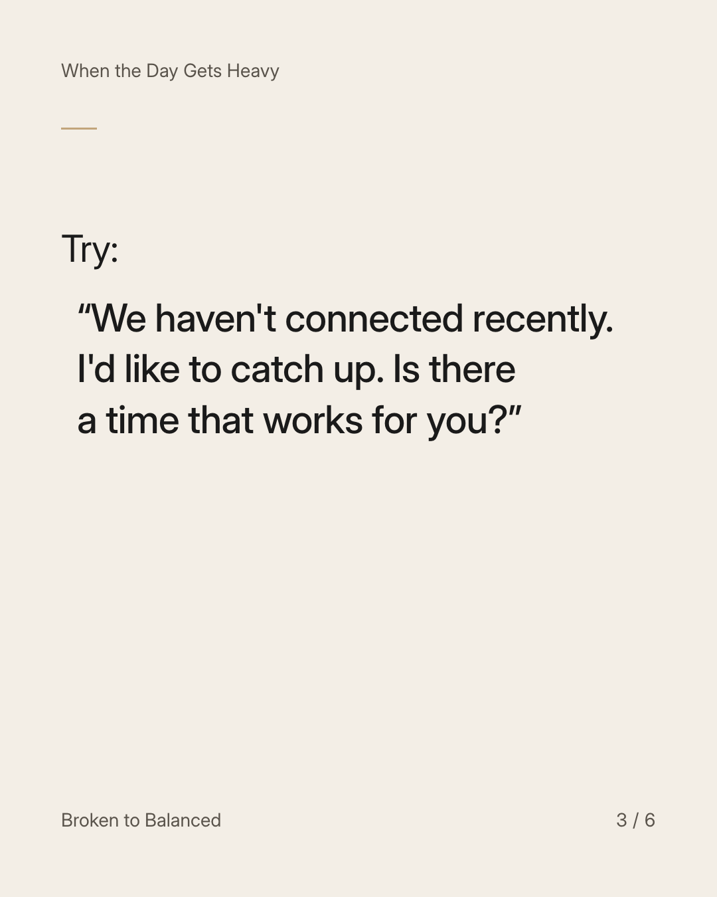
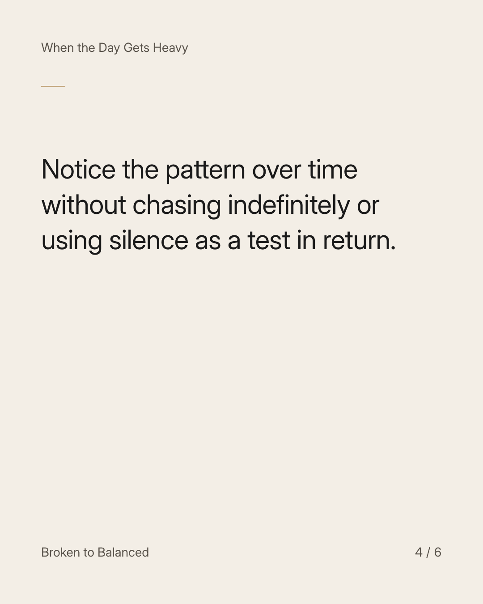
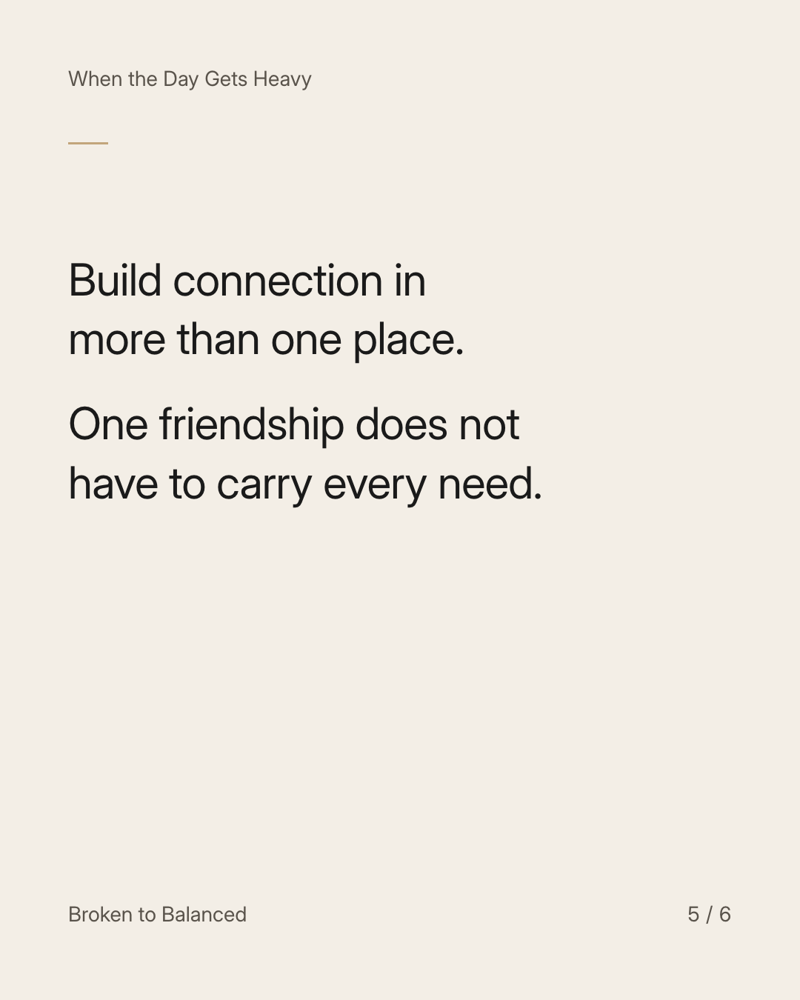
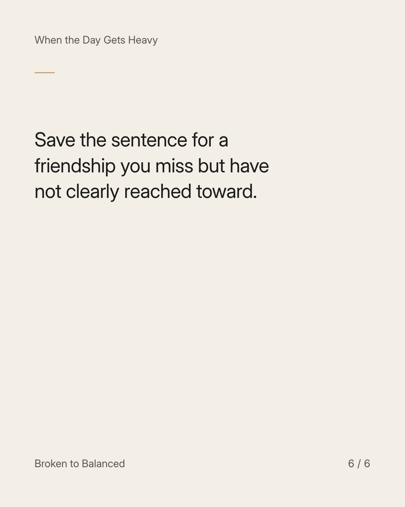

Exact text and accessibility text
When a friend goes quiet, ask before writing the whole story yourself.
Slide 1 of 6. When a friend goes quiet, ask before writing the whole story yourself.


Exact text and accessibility text
You may feel forgotten. You may also have incomplete information about what is happening in their life.
Slide 2 of 6. You may feel forgotten. You may also have incomplete information about what is happening in their life.


Exact text and accessibility text
Try: “We haven't connected recently. I'd like to catch up. Is there a time that works for you?”
Slide 3 of 6. Try: “We haven't connected recently. I'd like to catch up. Is there a time that works for you?”


Exact text and accessibility text
Notice the pattern over time without chasing indefinitely or using silence as a test in return.
Slide 4 of 6. Notice the pattern over time without chasing indefinitely or using silence as a test in return.


Exact text and accessibility text
Build connection in more than one place. One friendship does not have to carry every need.
Slide 5 of 6. Build connection in more than one place. One friendship does not have to carry every need.


Exact text and accessibility text
Save the sentence for a friendship you miss but have not clearly reached toward.
Slide 6 of 6. Save the sentence for a friendship you miss but have not clearly reached toward.
Exact caption
Plain-text fallback: select and copy the caption.